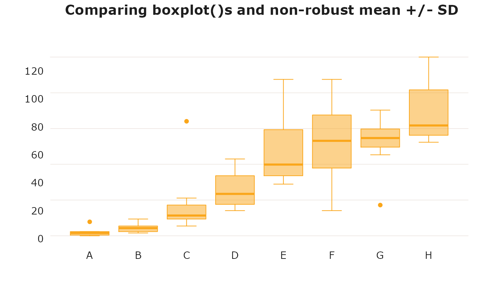

Basic boxplots that follow USQ colour and typography guidelines that uses (hopefully) sensible defaults.
boxplot_usq( x, main = "", sub = "", xlab = "", ylab = "", col = "usq charcoal", ... )
| x | for specifying data from which the boxplots are to be produced.
Either a numeric vector, or a single list containing such vectors. Additional
unnamed arguments specify further data as separate vectors (each
corresponding to a component boxplot). |
|---|---|
| main | Main title. Optional, if not supplied it will be blank. |
| sub | Sub title below x-axis label. Optional, if not supplied it will be blank. |
| xlab | X-axis label. Optional. |
| ylab | Y-axis label. Optional. |
| col | Colour to use as fill and outline for boxes and outlier points as a digit. Defaults to "usq charcoal". There are fifteen colours that can be used, see Details for more. |
| ... | Arguments to be passed to methods, such as graphical parameters
(see |
Names of colours for use in plots from the USQ Visual Identity Palette are
available from link{usq_cols}.
boxplot for full documentation of the basic
boxplot capabilities
# plot using "secondary orange" as the fill colour rb <- boxplot_usq(decrease ~ treatment, data = OrchardSprays, col = "secondary orange")title("Comparing boxplot()s and non-robust mean +/- SD")